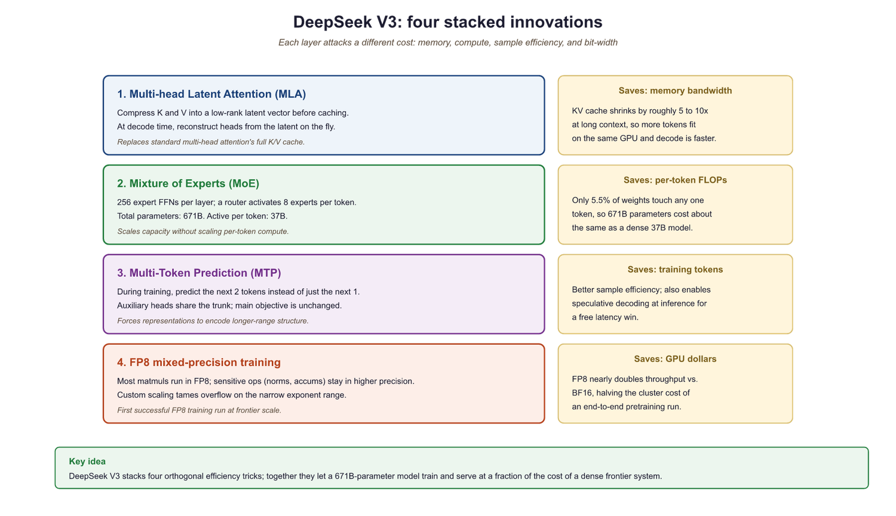

Open weights are like a recipe without the grocery list: you can see every layer, read every parameter, and still spend six months figuring out how they got it to cook.
Bert, Open Cookbook AI Agent
Prerequisites
This section builds on the landmark models from Section 7.1 and the architectural foundations from Section 4.3 (where MoE, GQA, and MLA are introduced). Here we examine how production models apply these techniques at scale; the memory implications of GQA are explored further in Section 10.2.
The open-weight revolution. While closed-source models define the frontier, open-weight models have transformed the LLM ecosystem by making powerful models available for download, inspection, fine-tuning, and local deployment. Meta's Llama family ignited this movement, and organizations like DeepSeek, Mistral, Alibaba (Qwen), and Microsoft (Phi) have pushed it further with architectural innovations that rival or surpass closed-source alternatives. Building on the closed-source frontier from Section 8.1, this section surveys the major open model families and takes a deep dive into the architectural innovations of DeepSeek V3, which introduced several techniques that fundamentally improve the efficiency of large-scale language modeling.
7.2.1 Open-Source vs. Open-Weight: A Distinction That Matters
SWA is not just "cheaper attention", it is a layered receptive-field trick borrowed from CNNs. Each layer attends locally over W tokens, but stacked L deep the effective receptive field is L × W, so a 32-layer model with W=4096 can route information across 128K positions even though no single layer ever performs a 128K × 128K attention. The KV-cache memory therefore grows with W, not sequence length, which is the actual production win. The cost: dependencies more than W apart in a single layer cannot interact, so models compensate by interleaving SWA with full-attention layers (Gemma 2) or using register tokens. Mistral 7B v0.2 dropped SWA precisely because the depth penalty turned out to be real.
Before surveying specific models, we must clarify terminology. Most models commonly called "open-source" are more precisely open-weight: the trained model parameters are publicly released, but the training code, training data, and data processing pipelines may remain proprietary. This openness enables the fine-tuning workflows covered in Chapter 17 and the parameter-efficient adaptation techniques in Chapter 18. True open-source would include all of these components.
- Open-weight: Model weights available for download; may include restrictive licenses (Llama 3's community license, for example, restricts use by companies with over 700M monthly active users)
- Open-source: Weights, training code, data, and evaluation code all available under permissive licenses (examples include OLMo from AI2, Pythia from EleutherAI)
- Open ecosystem: The broader infrastructure of tools, libraries, and platforms (Hugging Face, vLLM, llama.cpp) that enables practical use of open models
7.2.2 Meta Llama: The Catalyst
The original Llama weights were leaked online within a week of their restricted release in February 2023. Meta eventually embraced open distribution, releasing Llama 2 and 3 freely. Sometimes the community decides your release strategy for you.
Llama 3 and 3.1
Meta's Llama 3 family, released in 2024, established the gold standard for open-weight models. The release included 8B, 70B, and 405B parameter variants, all trained on over 15 trillion tokens of multilingual data. Llama 3's architecture builds on the standard dense Transformer with several refinements:
- Grouped Query Attention (GQA): Reduces KV cache memory by sharing key-value heads across multiple query heads (8 KV heads for 70B, compared to the full 64 attention heads)
- SwiGLU activation: Replaces ReLU in the feed-forward network with Swish-gated linear units, improving training stability and quality
- RoPE (Rotary Position Embeddings): Enables efficient extrapolation to longer sequences than seen during training
- 128K vocabulary: A significantly larger tokenizer than GPT-2's 50K, improving tokenization efficiency especially for non-English languages and code
Llama 3.1 extended the context window to 128K tokens using a progressive training strategy: the model was initially trained at 8K context, then extended to 128K through continued pre-training with gradually increasing sequence lengths.
With Llama 3 establishing a strong dense Transformer baseline, Meta's next move addressed the core tension between model capacity and inference cost. Their answer was a fundamental architecture change.
Llama 4: The MoE Leap
Llama 4 marked Meta's transition to Mixture of Experts architectures. The Llama 4 Scout variant uses 16 experts with 17B active parameters out of 109B total, while Llama 4 Maverick scales to 128 experts with 17B active out of 400B total. Both models are natively multimodal, processing text and images within a unified architecture. This shift to MoE allows Meta to scale total model capacity while keeping inference costs proportional to the active parameter count.
7.2.3 Mistral and Mixtral
Mistral AI has pursued a strategy of releasing both small, highly efficient models and larger MoE models:
- Mistral 7B: Introduced sliding window attention (4096 token window) for efficient long-context handling, outperforming Llama 2 13B on most benchmarks despite being nearly half the size
- Mixtral 8x7B: A sparse MoE model with 8 expert feed-forward networks per layer, routing each token to 2 of the 8 experts. Total parameters: 46.7B; active per token: approximately 12.9B. This architecture achieves Llama 2 70B quality at a fraction of the inference cost.
- Mixtral 8x22B: Scales the MoE pattern to 22B-parameter experts, reaching 176B total parameters with approximately 39B active per token
MoE decouples knowledge from compute. DeepSeek V3 stores 671B parameters of knowledge but activates only 37B parameters per token. This means it has the capacity of a 671B-parameter dense model while running at roughly the speed and cost of a 37B-parameter model. MoE lets you scale what the model knows without proportionally scaling what it costs to run.
Who: An engineering lead at a healthcare analytics company processing patient discharge summaries.
Situation: The company had been using GPT-4 via API for summarization and entity extraction from clinical documents, achieving strong accuracy on internal benchmarks.
Problem: A compliance audit flagged that sending patient data to a third-party API, even with a BAA (Business Associate Agreement), created unnecessary risk. The legal team mandated that all PHI (Protected Health Information) processing must remain on-premises.
Dilemma: Self-hosting a model capable enough to replace GPT-4 seemed expensive. The team debated between Llama 3.1 70B (strong but GPU-intensive), Llama 3.1 8B (cheaper but potentially less capable), and Mixtral 8x7B (MoE, good balance of cost and quality).
Decision: They deployed Llama 3.1 70B quantized to 4-bit (AWQ, a technique covered in Section 10.1) on two A100 80GB GPUs, served via vLLM, after benchmarking all three options on their clinical NLP tasks.
How: The team fine-tuned each candidate on 5,000 labeled clinical summaries using LoRA, then evaluated on a held-out set of 500 documents. They measured ROUGE scores, clinical entity F1, and throughput.
Result: The 4-bit Llama 3.1 70B achieved 94% of GPT-4's accuracy on their clinical benchmarks while running entirely on-premises. Monthly costs dropped from \$12,000 (API) to \$3,500 (GPU hosting), and the compliance risk was eliminated.
Lesson: Open-weight models combined with quantization make self-hosting practical even for demanding tasks, and the total cost of ownership is often lower than API pricing at scale, especially when data privacy is non-negotiable.
7.2.4 DeepSeek V3: Architecture Deep Dive
DeepSeek V3 is arguably the most architecturally innovative open-weight model released to date. At 671B total parameters with 37B active per token, it matches or exceeds many closed-source frontier models while introducing four key innovations: Multi-head Latent Attention (MLA), FP8 mixed-precision training, auxiliary-loss-free MoE load balancing, and multi-token prediction.

8.2.4.1 Multi-head Latent Attention (MLA)
MLA compresses key and value tensors into a low-rank latent space before caching, then reconstructs full K and V on the fly during decoding. For a detailed explanation of the MLA mechanism, including the compression/decompression math and a reference implementation, see Section 4.3. Here we focus on how DeepSeek V3 applied MLA at scale.
DeepSeek V3 uses 128 attention heads with d_head = 128, totaling 16,384 KV dimensions per layer per token. MLA compresses all of this into a single 512-dimensional latent vector, achieving a 97% reduction in per-token KV cache storage (512 / 16,384 = 3.1%). This is what allows DeepSeek V3 to serve long contexts at batch sizes that would be impossible with standard Transformer architecture.
MLA vs. GQA vs. MQA: Grouped Query Attention (GQA, used by Llama 3) reduces cache by sharing KV heads across groups. Multi-Query Attention (MQA) shares a single KV head across all queries. MLA takes a fundamentally different approach: rather than reducing the number of KV heads, it compresses the entire KV representation into a learned low-rank latent space. This achieves greater compression (97% vs. GQA's typical 75%) while preserving more expressive power, since the decompression matrices can reconstruct richer per-head representations than simple head-sharing allows.
Looking ahead: We return to the memory optimization implications of GQA and MLA in Section 10.2, where we quantify the KV cache savings these architectures provide during inference.
8.2.4.2 FP8 Mixed-Precision Training
DeepSeek V3 was the first model to successfully train at 671B parameters using FP8 (8-bit floating point) precision. Previous large-scale training runs used BF16 or FP16 (16-bit) formats, which double the memory requirements for storing model weights, activations, and gradients.
FP8 comes in two variants:
- E4M3: 4 exponent bits, 3 mantissa bits. Range: ±448, precision: ~0.1%. Used for forward pass computations.
- E5M2: 5 exponent bits, 2 mantissa bits. Wider range (±57344) but lower precision. Used for gradient computation where dynamic range matters more.
The challenge with FP8 training is that the reduced precision can cause training instability, especially in operations with large dynamic ranges. DeepSeek solved this through fine-grained quantization: instead of applying a single scaling factor per tensor, they apply per-block scaling factors with a granularity of 1x128 tiles. Each small block of 128 elements gets its own scale factor, allowing different parts of a tensor to use different dynamic ranges.
# Conceptual illustration of fine-grained FP8 quantization
import torch
def quantize_fp8_fine_grained(tensor, block_size=128):
"""
Fine-grained FP8 quantization as used in DeepSeek V3.
Each block of 128 elements gets its own scale factor.
"""
# Reshape into blocks
original_shape = tensor.shape
flat = tensor.reshape(-1)
n_blocks = (flat.numel() + block_size - 1) // block_size
# Pad if needed
padded = torch.zeros(n_blocks * block_size, device=tensor.device)
padded[:flat.numel()] = flat
blocks = padded.reshape(n_blocks, block_size)
# Per-block scaling: find max absolute value per block
max_vals = blocks.abs().max(dim=1, keepdim=True).values
max_vals = max_vals.clamp(min=1e-12)
# E4M3 max representable value is 448
fp8_max = 448.0
scales = max_vals / fp8_max
# Quantize each block with its own scale
quantized = (blocks / scales).clamp(-fp8_max, fp8_max)
# In practice, this is stored as int8 with scale factors
return quantized, scales, original_shape# Comparing domain-specific vs general models on financial sentiment
from transformers import pipeline
# General sentiment model
general = pipeline("sentiment-analysis",
model="distilbert-base-uncased-finetuned-sst-2-english")
# Domain-specific financial sentiment model
financial = pipeline("sentiment-analysis",
model="ProsusAI/finbert")
test_sentences = [
"The company reported aggressive growth in Q4", # positive in finance
"Short interest in the stock has declined sharply", # positive in finance
"The firm faces significant liability exposure", # negative in finance
"Revenue exceeded estimates by a wide margin", # positive everywhere
]
print(f"{'Sentence':55s} {'General':12s} {'FinBERT':12s}")
print("-" * 79)
for sent in test_sentences:
gen_result = general(sent)[0]
fin_result = financial(sent)[0]
gen_label = f"{gen_result['label']} ({gen_result['score']:.2f})"
fin_label = f"{fin_result['label']} ({fin_result['score']:.2f})"
print(f"{sent:55s} {gen_label:12s} {fin_label:12s}")The result: DeepSeek V3 used approximately 40% less GPU memory during training compared to a BF16 baseline, with no measurable degradation in final model quality. This efficiency gain was essential for making the 671B parameter training run feasible on their hardware budget.
Reducing memory with FP8 solved one bottleneck, but MoE architectures introduce a separate challenge: keeping all experts equally busy. If some experts are overloaded while others sit idle, the model wastes both compute and capacity.
8.2.4.3 Auxiliary-Loss-Free MoE Load Balancing
In Mixture of Experts models, a gating network routes each token to a subset of experts. A persistent problem is load imbalance: without intervention, the gating network tends to concentrate tokens on a few "popular" experts while leaving others underutilized. This wastes compute capacity and degrades model quality.
The standard solution is an auxiliary loss that penalizes imbalanced routing. This loss term is added to the main language modeling loss and encourages uniform expert utilization. However, the auxiliary loss introduces a tension: optimizing for balanced routing can conflict with optimizing for language modeling quality. The auxiliary loss coefficient must be carefully tuned, and even with tuning, it subtly degrades the primary training objective.
DeepSeek V3 eliminates this conflict with a novel approach: learnable bias terms added to the gating scores:
The bias terms $b$ are not learned through cross-entropy. Instead, they are adjusted dynamically based on observed load statistics: if an expert is overloaded, its bias is decreased; if underloaded, its bias is increased. This adjustment happens outside the gradient computation, meaning the language modeling loss is never contaminated by a balancing objective.
from torch import nn
import torch
# Auxiliary-loss-free MoE load balancing concept
class AuxLossFreeMoE(nn.Module):
def __init__(self, d_model, n_experts, top_k=2):
super().__init__()
self.n_experts = n_experts
self.top_k = top_k
self.gate = nn.Linear(d_model, n_experts, bias=False)
self.experts = nn.ModuleList([
FeedForward(d_model) for _ in range(n_experts)
])
# Dynamic bias terms (NOT trained by gradient descent)
self.register_buffer(
'expert_bias',
torch.zeros(n_experts)
)
self.bias_update_rate = 0.001
def forward(self, x):
# Compute gating scores with dynamic bias
logits = self.gate(x) + self.expert_bias # bias added here
scores = torch.softmax(logits, dim=-1)
# Select top-k experts per token
top_scores, top_indices = scores.topk(self.top_k, dim=-1)
top_scores = top_scores / top_scores.sum(dim=-1, keepdim=True)
# Route tokens to experts and compute outputs
output = self._route_and_compute(x, top_scores, top_indices)
# Update bias based on load (outside gradient computation)
with torch.no_grad():
load = self._compute_load(top_indices)
target_load = x.shape[0] * self.top_k / self.n_experts
# Decrease bias for overloaded, increase for underloaded
self.expert_bias -= self.bias_update_rate * (load - target_load)
return output
8.2.4.4 Multi-Token Prediction (MTP)
Standard language model training uses a next-token prediction objective: given the context, predict the immediately next token. DeepSeek V3 augments this with multi-token prediction, where additional lightweight prediction heads simultaneously predict tokens at positions t+2, t+3, and so on.
The benefit is twofold. First, the multi-token objective provides richer training signal, since the hidden representations must encode information about multiple future tokens rather than just one. This produces more informative internal representations. Second, the additional prediction heads can be repurposed at inference time for speculative decoding, where the draft predictions from these heads are verified in parallel, potentially doubling generation speed.
7.2.5 Qwen 2.5: Alibaba's Contender
Alibaba's Qwen (Tongyi Qianwen) 2.5 series offers a comprehensive family spanning 0.5B to 72B parameters. The Qwen family is particularly notable for:
- Strong multilingual performance: Competitive with Llama 3 on English while significantly outperforming it on Chinese, Japanese, Korean, and other Asian languages
- Extended context: Qwen 2.5 supports up to 128K tokens with YaRN (Yet another RoPE extensioN) for efficient position interpolation
- Specialized variants: Qwen-Coder (code generation), Qwen-Math (mathematical reasoning), and Qwen-VL (vision-language multimodal)
- Permissive licensing: Apache 2.0 for most model sizes, enabling unrestricted commercial use
7.2.6 Microsoft Phi: Small but Capable
Microsoft's Phi series challenges the assumption that bigger is always better. The Phi models use knowledge distillation and curated high-quality training data to achieve performance that punches far above their parameter count:
| Model | Parameters | Key Innovation | Performance Note |
|---|---|---|---|
| Phi-3 Mini | 3.8B | Curated "textbook quality" data | Matches Llama 3 8B on some benchmarks |
| Phi-3 Small | 7B | Data quality + distillation | Competitive with Mixtral 8x7B |
| Phi-3 Medium | 14B | Balanced size/quality | Approaches GPT-4o mini capability |
| Phi-4 | 14B | Synthetic data from GPT-4 | Strong reasoning, code, math |
The Phi approach demonstrates that training data quality can partially compensate for model size. By training on carefully curated, information-dense data (including synthetic data generated by larger models), Phi models achieve a higher "knowledge per parameter" ratio than models trained on raw web crawls.
7.2.7 Google Gemma: Open Models from DeepMind
Google's Gemma family brings DeepMind's research into the open-weight ecosystem. Gemma 2 (2024) was released at 2B, 9B, and 27B parameter sizes, trained using techniques from the larger Gemini models. Gemma 3 (2025) expanded to multimodal capabilities, accepting both text and image inputs.
Key characteristics of the Gemma family:
- Architecture: Decoder-only transformer with GQA, RoPE softmax, and GeGLU activation
- Knowledge distillation: Smaller Gemma models benefit from distillation from larger Gemini models
- Licensing: Gemma uses a permissive license (Gemma Terms of Use) that allows commercial use without usage-based restrictions, distinguishing it from Llama's 700M MAU threshold
- Competitive positioning: Gemma 2 27B competes directly with Llama 3 8B and Mistral 7B, consistently ranking well on the Open LLM Leaderboard for its size class
The Small Language Model (SLM) Trend
A defining trend of 2024 to 2025 is the rapid improvement of models in the 0.5B to 4B parameter range, often called Small Language Models (SLMs). These models are not simply scaled-down versions of larger architectures; they represent a deliberate engineering effort to maximize capability per parameter through superior training data, architectural refinements, and knowledge distillation from larger models. The practical impact is significant: SLMs can run on edge devices, mobile phones, and consumer laptops without requiring GPU acceleration, enabling AI applications that work offline, maintain user privacy, and operate at negligible inference cost.
Microsoft Phi-4 and the "Textbook Quality" Approach
Microsoft's Phi-4 (14B parameters, released late 2024) achieved reasoning and math performance that rivaled GPT-4o mini despite being a fraction of the size. The Phi series' key insight is that training data quality can substitute for model scale. Phi-4 was trained primarily on synthetic data generated by GPT-4, curated "textbook quality" web data, and filtered academic content. This data-centric approach achieves a higher density of useful knowledge per parameter than training on raw web crawls. Phi-4 Mini (3.8B) extends this approach to an even smaller model that runs comfortably on mobile devices while maintaining strong performance on code and math benchmarks. The Phi series demonstrates that for reasoning-heavy tasks, a small model trained on excellent data can outperform a larger model trained on lower-quality data.
Google Gemma 3: Multimodal SLMs
Gemma 3 (2025) brought multimodal capabilities to the small model tier, with the 4B variant accepting both text and image inputs. Gemma 3 4B uses knowledge distillation from larger Gemini models to compress their capabilities into a deployable package. On text benchmarks, Gemma 3 4B competes with models 2 to 3x its size, and its vision capabilities enable on-device document understanding, image captioning, and visual question answering. Gemma 3 1B, designed for the most constrained environments, can run on Raspberry Pi class hardware while providing useful text generation capabilities. Google's permissive licensing (Gemma Terms of Use) makes these models particularly attractive for commercial deployments that require full control over the model deployment stack.
Qwen 2.5: The Range Play
Alibaba's Qwen 2.5 series (released late 2024) spans an unusually wide range from 0.5B to 72B parameters, all sharing the same architecture and trained on the same data pipeline. The 0.5B and 1.5B variants are among the most capable models at their size points, particularly for multilingual tasks (Qwen's training data includes strong representation of Chinese, Japanese, Korean, and other Asian languages alongside English). The 3B variant has become popular for on-device applications and as a fast draft model for speculative decoding with larger Qwen models. By offering a consistent model family across the full size spectrum, Qwen enables practitioners to prototype with the 72B model and deploy with a smaller variant, maintaining behavioral consistency while reducing inference costs by 10 to 50x.
When to Choose an SLM
SLMs are the right choice when: latency constraints require sub-100ms inference (SLMs can generate tokens in under 10ms on modern CPUs); privacy requirements demand on-device processing with no data leaving the user's hardware; cost optimization requires serving millions of queries per day (SLMs at \$0.01 to \$0.05 per million tokens versus \$1 to \$15 for frontier models); or the task is well-defined and does not require broad world knowledge (classification, extraction, summarization of provided text, code completion). SLMs are not the right choice when the task requires extensive world knowledge, complex multi-step reasoning, or strong performance across many diverse domains. For these tasks, larger models still provide a meaningful quality advantage.
7.2.8 Specialized Open Models
Beyond the general-purpose model families above, the open ecosystem includes models fine-tuned for specific domains. These specialized models often outperform much larger generalists on their target tasks.
Code Models
Code generation models represent one of the most commercially successful specializations of LLMs. Unlike general-purpose models that treat code as a subset of text, dedicated code models employ training strategies, objectives, and evaluation methods specifically designed for programming tasks.
Code-specific pretraining. Code models are pretrained (or continued-pretrained) on massive code corpora. The Stack v2 (used by StarCoder2) contains over 67.5 billion lines of permissively licensed code from 600+ programming languages, filtered for quality and deduplicated. This pretraining teaches models language syntax, API usage patterns, common algorithms, and the relationships between code and natural language (docstrings, comments, variable names). Models that train from scratch on code (rather than fine-tuning a general model) tend to develop better tokenizers for programming, since code has a different character distribution than prose: frequent curly braces, indentation, camelCase identifiers, and operator symbols.
Fill-in-the-Middle (FIM) training. A key architectural innovation for code models is FIM (also called infilling). During training, a random span of code is extracted from the middle of a file and moved to the end. The model learns to generate the missing span given the prefix (code before the gap) and suffix (code after the gap). This enables IDE autocomplete that considers both what comes before and after the cursor, a capability standard left-to-right language models lack. CodeLlama, StarCoder2, and DeepSeek-Coder all use FIM training. The typical format uses special tokens: <PRE> prefix <SUF> suffix <MID> infill.
Major code model families:
- CodeLlama (Meta, 2023): Continued pretraining of Llama 2 on 500B tokens of code. Available in 7B, 13B, and 34B sizes with variants for Python specialization and instruction-following. Supports FIM and 100K context via RoPE scaling.
- StarCoder2 (BigCode, 2024): Trained from scratch on The Stack v2 in 3B, 7B, and 15B sizes. Uses grouped query attention (GQA) and a 16K context window. The 15B model matches or exceeds CodeLlama-34B on many benchmarks despite being less than half the size, demonstrating the value of high-quality, deduplicated training data.
- DeepSeek-Coder (DeepSeek, 2024): Available in 1.3B to 33B sizes, trained on 2 trillion tokens with a 87% code / 13% natural language mix. Employs repository-level pretraining where files from the same repository are concatenated, teaching cross-file dependency understanding. DeepSeek-Coder-V2 extends this with MoE architecture.
- Qwen2.5-Coder (Alibaba, 2024): The coding specialist of the Qwen family, trained on 5.5 trillion tokens of code data. Strong multilingual code capabilities with particular strength in Chinese technical documentation.
Evaluation: HumanEval, MBPP, and pass@k. Code models use specialized benchmarks. HumanEval (Chen et al., 2021) consists of 164 hand-written Python programming problems with unit tests. MBPP (Mostly Basic Python Programming) provides 974 crowd-sourced problems. The primary metric is pass@k: the probability that at least one of k generated solutions passes all test cases. For example, pass@1 measures first-attempt accuracy (the model generates one solution and it must be correct), while pass@10 allows 10 attempts. Temperature sampling is critical: higher temperatures (0.6-0.8) improve pass@10 by increasing diversity, while greedy decoding (temperature 0) optimizes pass@1. More challenging benchmarks include SWE-bench, which tests models on real GitHub issues requiring multi-file edits across entire repositories, and MultiPL-E, which extends HumanEval to 18 programming languages.
From generation to software engineering. Modern code models have evolved beyond single-function generation into autonomous software engineering agents. Agentic systems like SWE-Agent, Devin, and Claude Code wrap code models with tool use (file editing, terminal execution, test running) to solve complex multi-step programming tasks. This progression from autocomplete to agent represents one of the fastest-moving areas in applied AI.
Vision-Language Models
LLaVA (Large Language and Vision Assistant) demonstrates the visual instruction tuning approach: connect a pre-trained vision encoder (CLIP) to a language model through a projection layer, then fine-tune on visual question-answering data. This modular approach has spawned many variants and remains a popular architecture for open multimodal models.
Speech Models
Whisper from OpenAI (released with open weights) provides robust speech recognition across 99 languages. Its encoder-decoder architecture processes mel spectrograms and generates text, with optional timestamp prediction for alignment.
Biomedical and Clinical Models
Biomedical text contains dense technical vocabulary, abbreviations, and syntactic patterns that differ sharply from general English. Domain-specific pre-training on scientific literature and clinical records consistently improves performance on tasks like named entity recognition (NER), relation extraction, and medical question answering.
BioBERT (Lee et al., 2020) was the first widely adopted domain-specific BERT variant. It initializes from the original BERT checkpoint and continues pre-training on PubMed abstracts and PMC full-text articles (approximately 18 billion tokens of biomedical text). This additional pre-training enables the model to understand terms like "angiogenesis," "p53 mutation," and "randomized controlled trial" in proper context, rather than treating them as rare tokens. BioBERT achieved state-of-the-art results on biomedical NER, relation extraction, and question answering benchmarks at the time of its release. It remains widely used as the classical ML component in hybrid extraction pipelines (see Section 15.5 for a case study on pairing BioBERT with LLM-generated training data).
PubMedBERT (Gu et al., 2021) took a different approach: instead of continuing from a general BERT checkpoint, it was pre-trained from scratch exclusively on PubMed text with a domain-specific vocabulary. This avoids the "vocabulary mismatch" problem where general-purpose tokenizers split biomedical terms into nonsensical subwords. PubMedBERT outperformed BioBERT on the BLURB biomedical NLP benchmark, demonstrating that training from scratch on in-domain data can be superior to continued pre-training.
ClinicalBERT (Alsentzer et al., 2019) extends BioBERT with additional pre-training on approximately 2 million clinical notes from the MIMIC-III database. Clinical notes differ substantially from published literature: they contain abbreviations ("pt" for patient, "hx" for history), sentence fragments, misspellings, and domain-specific shorthand. ClinicalBERT captures these patterns, improving performance on tasks like clinical NER, de-identification, and readmission prediction.
On the generative side, BioGPT (Luo et al., 2022) applies the GPT-2 architecture to biomedical literature, training on 15 million PubMed abstracts. Unlike the encoder-only BERT variants, BioGPT generates text and excels at biomedical text generation, relation extraction in a generative format, and document-level question answering. Med-PaLM 2 (Singhal et al., 2023) demonstrated that scaling up with medical data and instruction tuning can achieve expert-level performance on medical licensing exams (scoring 86.5% on MedQA, surpassing the passing threshold). Its clinical deployment requires careful guardrails, as discussed in the healthcare applications section (Section 27.3).
# Loading and using BioBERT for biomedical named entity recognition
from transformers import AutoTokenizer, AutoModelForTokenClassification
from transformers import pipeline
# BioBERT fine-tuned for biomedical NER (diseases, chemicals, genes)
ner_pipeline = pipeline(
"ner",
model="dmis-lab/biobert-base-cased-v1.2",
tokenizer="dmis-lab/biobert-base-cased-v1.2",
aggregation_strategy="simple",
)
text = (
"Metformin inhibits hepatic gluconeogenesis and improves "
"insulin sensitivity in patients with type 2 diabetes mellitus."
)
entities = ner_pipeline(text)
for ent in entities:
print(f" {ent['word']:30s} {ent['entity_group']:10s} "
f"score={ent['score']:.3f}")
# For clinical text, use ClinicalBERT:
# model = AutoModel.from_pretrained("emilyalsentzer/Bio_ClinicalBERT")
# This model understands clinical abbreviations and note-writing conventions.Financial Models
Financial language presents unique challenges for NLP. Words like "short," "liability," "call," and "aggressive" carry completely different sentiment in financial contexts versus everyday usage. A general sentiment model might flag "aggressive growth strategy" as negative, when it is in fact a strongly positive signal for investors.
FinBERT (Araci, 2019) addresses this by continuing BERT pre-training on financial communications including Reuters TRC2 financial news, earnings call transcripts, and analyst reports. It is the standard baseline for financial sentiment analysis, classification of SEC filings, and financial named entity recognition. In production pipelines, FinBERT often serves as a fast first-stage classifier that scores thousands of documents, with a larger LLM handling only the highest-signal items (see Section 27.2 for a case study on this two-stage approach).
BloombergGPT (Wu et al., 2023) took a more ambitious approach: a 50-billion parameter model trained on a mix of general text and Bloomberg's proprietary financial data (363 billion tokens from financial sources, 345 billion from general sources). By interleaving domain-specific and general corpora during pre-training, BloombergGPT achieved strong performance on financial benchmarks without sacrificing general language ability. This "mixed-domain pre-training" strategy influenced subsequent efforts to build domain-specialized LLMs without losing general capabilities.
FinGPT (Yang et al., 2023) represents the open-source alternative, applying LoRA fine-tuning (Section 19.1) to open-weight base models on financial instruction data. This approach is more accessible than training from scratch and can be updated as market terminology evolves.
Legal Models
Legal text is characterized by long, nested sentences, archaic phrasing, and a vocabulary where terms have precise meanings that differ from everyday usage ("consideration" means something given in exchange for a promise, not merely "thinking about something"). Contracts, statutes, and case law each follow distinct structural patterns.
LegalBERT (Chalkidis et al., 2020) was pre-trained on 12 GB of legal text from EU legislation, US court opinions, and contracts. It significantly outperforms general BERT on legal NER, contract clause classification, and court judgment prediction. The model understands that "party of the first part" refers to a contractual role, that "notwithstanding" introduces an exception, and that "shall" implies obligation rather than future tense.
SaulLM-7B (Colombo et al., 2024) is a more recent, larger model built on Mistral-7B with continued pre-training on 30 billion tokens of legal text. It supports legal text understanding and generation tasks at a scale that enables practical applications like contract review, legal research summarization, and regulatory compliance analysis.
Scientific Models
SciBERT (Beltagy et al., 2019) was pre-trained on 1.14 million papers from Semantic Scholar spanning computer science and biomedical domains. It uses a custom vocabulary (SciVocab) built from scientific text, which handles terms like "convolutional" and "spectrophotometry" as single tokens rather than splitting them. SciBERT improves performance on scientific NER, citation intent classification, and paper categorization.
Galactica (Taylor et al., 2022) from Meta AI was trained on 106 billion tokens of scientific text including papers, textbooks, encyclopedias, code, and chemical formulas (represented in SMILES notation). While its public release was retracted due to concerns about hallucination in scientific contexts, the underlying approach of training on structured scientific knowledge (including LaTeX equations, protein sequences, and citation graphs) influenced subsequent scientific LLMs.
Domain-specific models are not universally superior to general-purpose LLMs. They excel at classification, NER, and structured extraction tasks where domain vocabulary matters and latency or cost constraints favor smaller models. General-purpose LLMs excel at open-ended generation, multi-step reasoning, and tasks requiring world knowledge beyond the domain. The strongest production systems often combine both: a fast domain-specific model for high-throughput processing, with a general LLM handling complex edge cases (see Chapter 15 on hybrid ML/LLM systems).
| Domain | Encoder Models (BERT-style) | Generative Models (GPT-style) | Key Benchmarks |
|---|---|---|---|
| Biomedical | BioBERT, PubMedBERT, ClinicalBERT, BioMegatron | BioGPT, Med-PaLM 2, BioMistral, Meditron, OpenBioLLM | BLURB, MedQA, PubMedQA, MIMIC-III tasks |
| Finance | FinBERT, SEC-BERT | BloombergGPT, FinGPT, FinMA | FPB, FiQA, Financial PhraseBank, FLUE |
| Legal | LegalBERT, CaseLaw-BERT | SaulLM-7B, Lawyer-LLaMA | LexGLUE, CaseHOLD, EURLEX |
| Scientific | SciBERT, MatSciBERT, ScholarBERT | Galactica, SciGLM | SciERC, SciRepEval, S2ORC tasks |
| Code | CodeBERT, GraphCodeBERT | CodeLlama, StarCoder2, DeepSeek-Coder | HumanEval, MBPP, MultiPL-E, SWE-bench |
CodeBERT (Feng et al., 2020) deserves special mention as a bridge between natural language and programming languages. Unlike CodeLlama and StarCoder2 (which focus on code generation), CodeBERT is an encoder model trained on bimodal data: natural language paired with code from six programming languages. It excels at code search (finding code from natural language queries), code documentation generation, and vulnerability detection. GraphCodeBERT extends this by incorporating data flow graphs from code, understanding not just the text of code but the semantic relationships between variables. These encoder models are particularly useful in retrieval and classification pipelines where you need to understand code rather than generate it.
# Compare a general-purpose sentiment model vs a finance-tuned one on financial text.
# Domain pretraining (FinBERT) often beats much larger general models on niche jargon.
from transformers import pipeline
general = pipeline("text-classification",
model="distilbert-base-uncased-finetuned-sst-2-english")
finbert = pipeline("text-classification",
model="ProsusAI/finbert")
examples = [
"The company beat revenue expectations and raised guidance.",
"Quarterly losses widened despite analyst projections.",
"The stock plunged after the earnings call.",
"The bond yields tightened sharply on the dovish Fed pivot.",
]
for text in examples:
g = general(text)[0]
f = finbert(text)[0]
print(f"{text!r}")
print(f" general : {g['label']:>8s} ({g['score']:.2f})")
print(f" finbert : {f['label']:>8s} ({f['score']:.2f})")
# Note: on the last example, general models often miss "dovish pivot" but FinBERT catches it.7.2.9 The Hugging Face Ecosystem
No discussion of open models is complete without the Hugging Face ecosystem, which provides the infrastructure for discovering, downloading, and deploying models:
# Loading and running an open-weight model with Hugging Face
from transformers import AutoTokenizer, AutoModelForCausalLM
import torch
# Download and load Llama 3 8B (requires access approval)
model_name = "meta-llama/Meta-Llama-3-8B-Instruct"
tokenizer = AutoTokenizer.from_pretrained(model_name)
model = AutoModelForCausalLM.from_pretrained(
model_name,
torch_dtype=torch.bfloat16, # Half precision for memory
device_map="auto", # Automatic GPU placement
)
# Format a chat message
messages = [
{"role": "system", "content": "You are a helpful assistant."},
{"role": "user", "content": "Explain MoE in 3 sentences."}
]
input_ids = tokenizer.apply_chat_template(
messages, return_tensors="pt"
).to(model.device)
# Generate a response
output = model.generate(
input_ids,
max_new_tokens=256,
temperature=0.7,
do_sample=True,
)
response = tokenizer.decode(
output[0][input_ids.shape[1]:],
skip_special_tokens=True
)
print(response)The Hugging Face ecosystem includes:
- Model Hub: Over 500,000 models with standardized APIs, model cards, and community discussions
- Transformers library: Unified Python API for loading and running models from any major architecture
- Datasets library: Standardized access to training and evaluation datasets
- Spaces: Hosted applications for interactive model demos using Gradio or Streamlit
- PEFT: Parameter-Efficient Fine-Tuning methods (LoRA, QLoRA) for adapting large models on consumer hardware
7.2.10 The AI Model Licensing Landscape
The choice of license profoundly affects what you can do with an open-weight model, and the AI licensing landscape has become increasingly nuanced. Understanding the distinctions is essential for any team evaluating models for production use.
Truly permissive licenses place minimal restrictions on commercial use, modification, and redistribution. Apache 2.0 is the gold standard in this category and is used by Mistral (for its smaller models), Qwen 2.5, and most models from EleutherAI. Under Apache 2.0, you can fine-tune the model, deploy it commercially, and redistribute derivatives without notifying the original authors or paying royalties. The only requirements are preserving the copyright notice and stating any changes. This makes Apache 2.0 the safest choice for startups and enterprises that need legal clarity.
Community and custom licenses occupy a middle ground. Meta's Llama Community License (used by Llama 3 and Llama 4) permits free commercial use but includes a notable restriction: companies with more than 700 million monthly active users must request a separate license from Meta. This effectively grants free access to the vast majority of businesses while reserving the right to negotiate terms with the largest tech companies. Google's Gemma Terms of Use are similarly permissive for most users but include restrictions on using model outputs to train competing models. Microsoft's Phi License permits commercial use but restricts certain applications (weapons, surveillance) and requires attribution.
Research-only and non-commercial licenses restrict models to academic or personal use. These were more common in the early days of open models (the original LLaMA was research-only), but the trend has moved strongly toward commercial permissiveness as companies recognized that broad adoption drives ecosystem value.
A practical framework for evaluating licenses involves four questions: (1) Can I use this commercially without negotiation? (2) Can I fine-tune and redistribute the resulting model? (3) Are there restrictions based on my company's size or the application domain? (4) Can I use the model's outputs to train other models? The answers vary significantly across license families:
| License | Commercial Use | Fine-tune & Redistribute | Notable Restrictions | Used By |
|---|---|---|---|---|
| Apache 2.0 | Yes | Yes | None (attribution only) | Mistral, Qwen, OLMo |
| Llama Community | Yes | Yes | 700M MAU threshold | Llama 3, Llama 4 |
| Gemma Terms | Yes | Yes | No competitive training | Gemma 2, Gemma 3 |
| Phi License | Yes | Yes | Use-case restrictions | Phi-3, Phi-4 |
| CC-BY-NC | No | Yes (non-commercial) | No commercial use | Some research models |
The licensing landscape continues to evolve. The Open Source Initiative (OSI) published its Open Source AI Definition in late 2024, attempting to establish clear criteria for what qualifies as "open source" in the AI context. Under the OSI definition, many popular models (including Llama) do not qualify because they restrict usage or do not release training data. This has sparked ongoing debate about terminology and expectations, but for practitioners the key takeaway is simple: always read the license before deploying a model in production, and prefer Apache 2.0 when legal simplicity is a priority.
7.2.11 Lab: Running Models Locally
For local inference on consumer hardware, llama.cpp and its wrapper Ollama provide optimized C++ inference with quantized models:
# Using Ollama to run models locally
# Install: https://ollama.ai
# Pull and run Llama 3 8B (quantized to 4-bit, ~4.7GB)
# Terminal command:
# ollama pull llama3
# ollama run llama3
# Programmatic access via Python
import requests
def query_ollama(prompt, model="llama3"):
response = requests.post(
"http://localhost:11434/api/generate",
json={
"model": model,
"prompt": prompt,
"stream": False,
}
)
return response.json()["response"]
# Compare 8B local vs 70B via API
local_response = query_ollama(
"What are the advantages of Mixture of Experts models?"
)
print("Local 8B response:")
print(local_response)Show Answer
Show Answer
Show Answer
Show Answer
Show Answer
Start prototyping with 7B or 8B parameter models before scaling up. For many tasks, a well-prompted small model matches a poorly-prompted large one. This lets you iterate on your prompt and pipeline 10 times faster before committing to the larger model.
Mixture of Experts architectures embody a paradox borrowed from economics: Adam Smith's division of labor. A single generalist worker (dense model) is limited by the capacity of one brain, while a team of specialists (expert modules) can collectively know far more, as long as a good manager (router) assigns tasks correctly. MoE models achieve this by activating only a fraction of their parameters per token, decoupling total capacity from per-inference cost. But specialization creates fragility: if the router learns to ignore certain experts (expert collapse), the model loses capacity without warning. This parallels the economic concept of "market failure" where resources are misallocated despite the theoretical efficiency of specialization. DeepSeek V3's auxiliary-loss-free load balancing is an attempt to solve this allocation problem without distorting the training signal, much as mechanism designers in economics seek incentive-compatible solutions to resource allocation.
Key Takeaways
- Open-weight models now approach frontier closed-source capability on many tasks. The gap has closed dramatically since 2023, driven by innovations in architecture, training data, and efficiency.
- Mixture of Experts is the dominant scaling strategy for both open and closed models, decoupling total knowledge capacity from per-token inference cost.
- DeepSeek V3's four innovations represent the state of the art in efficient large-scale training: MLA for KV cache compression (97% reduction), FP8 for memory-efficient training, auxiliary-loss-free MoE for clean optimization, and multi-token prediction for richer representations.
- Data quality can partially compensate for model size, as demonstrated by the Phi series, which achieves strong performance at 3.8B-14B parameters through curated and synthetic training data.
- The Hugging Face ecosystem provides the essential infrastructure (Model Hub, Transformers, Datasets, Spaces) that makes open-weight models practical for production use.
- Local inference is now practical through quantization and optimized runtimes (llama.cpp, Ollama), enabling 8B-parameter models to run on consumer laptops.
- Domain-specific models (BioBERT, FinBERT, LegalBERT, SciBERT, CodeBERT) outperform general-purpose models on specialized classification and extraction tasks, while general LLMs retain advantages for open-ended generation and multi-step reasoning. The best production systems combine both.
Exercises
Llama 3 ships with weights but not training data; OLMo 2 ships weights, data, training code, and intermediate checkpoints. (a) Why does this distinction matter for academic research? (b) Why does it matter much less for a startup building a product on Llama 3? (c) Name one situation where your startup would specifically need OLMo-style full openness rather than just open weights.
Answer Sketch
(a) Reproducibility, contamination analysis (was a benchmark in the training data?), and the ability to study scaling/training-dynamics questions all require the data and code, not just the final weights. (b) For a product, you only need to run inference and possibly fine-tune; weights are sufficient and the license is what actually constrains your usage. (c) If you must legally certify training-data provenance for a regulated client (medical, defense, EU AI Act high-risk), or if you need to retrain on a clean subset to remove a contamination class, full openness is essential. For most commercial usage Llama-style "open weights" is adequate.
DeepSeek-V3 has 671B total parameters but activates only 37B per token via Mixture-of-Experts. Predict: (a) per-token serving cost relative to a dense 70B model; (b) per-token cost relative to a dense 671B model; (c) one operational pain point that makes MoE harder to deploy than its FLOP advantage suggests.
Answer Sketch
(a) FLOPs are roughly half of dense 70B (37B vs 70B activated), so theoretical compute cost is lower; in practice MoE batch routing overhead reduces this advantage to roughly comparable. (b) FLOPs are ~5% of dense 671B per token, but you still need ~671B worth of GPU memory to host the weights. So you save compute but not VRAM. (c) The pain point is expert-parallel routing: every token pulls a different subset of experts, so cross-GPU communication is the bottleneck and load can be uneven across experts. This is why MoE deployments require careful batch packing, expert dropout schedules, and many GPUs with high-bandwidth interconnect; on a single 8-GPU node, MoE often loses to a dense model.
You want to run Llama-3-70B on a single 24GB consumer GPU. Sketch the approach: which quantization scheme, what library, what loss in quality should you expect, and how do you verify the loss is acceptable?
Answer Sketch
Use 4-bit GPTQ or AWQ via the transformers + auto-gptq stack, or GGUF Q4_K_M via llama.cpp. 70B at 4 bits is ~35GB, which still doesn't fit; you need 3-bit (Q3_K_M, ~28GB) or partial CPU offload. Expected quality loss: 1-3 points on MMLU and similar benchmarks for Q4_K_M, larger for Q3. Verification: run a 50-100 prompt regression on your actual workload (not just MMLU) and compare against the fp16 reference; track exact-match for structured tasks and pairwise preference for open-ended tasks. Don't rely solely on perplexity, which is insensitive to small quality regressions that matter in production.
Your team picks an open-weight model based purely on benchmark scores. Identify three license-related failure modes that can blow up your launch, and give one mitigation for each.
Answer Sketch
(1) "Non-commercial only" licenses (e.g., Falcon-180B early, some Mistral research releases) prohibit revenue use. Mitigation: filter your candidate list with a commercial-use checker before benchmarking. (2) Acceptable Use Policies that exclude specific verticals (military, surveillance, certain medical use). Mitigation: legal review of the AUP against your actual use case, including downstream customer use. (3) Output attribution and competitor clauses (Llama's "100M MAU" trigger; clauses preventing training other models on the outputs). Mitigation: design your data pipeline so model outputs are clearly tagged with provenance and your training corpus excludes outputs of competitor-restricted models. The general lesson: license review precedes architecture review.
Open reasoning models and distillation. DeepSeek-R1 (2025) demonstrated that open-weight models can achieve reasoning capabilities comparable to o1 through reinforcement learning alone, without supervised chain-of-thought data. The subsequent release of R1 distilled models (1.5B to 70B parameters) showed that reasoning ability can be transferred to smaller architectures through knowledge distillation (Section 19.5). Meanwhile, Llama 4 introduced a native multimodal MoE architecture, and the Qwen 2.5 family pushed multilingual capabilities further. The open model landscape is increasingly competitive across all capability dimensions, not just raw text generation.
Further Reading
Foundational Open Models
Mixture-of-Experts & Efficiency
International Open Models
Domain-Specific Models
What's Next?
In the next section, Section 8.3: Reasoning Models and Test-Time Compute, we examine reasoning models and test-time compute scaling, a major recent development in LLM capabilities.